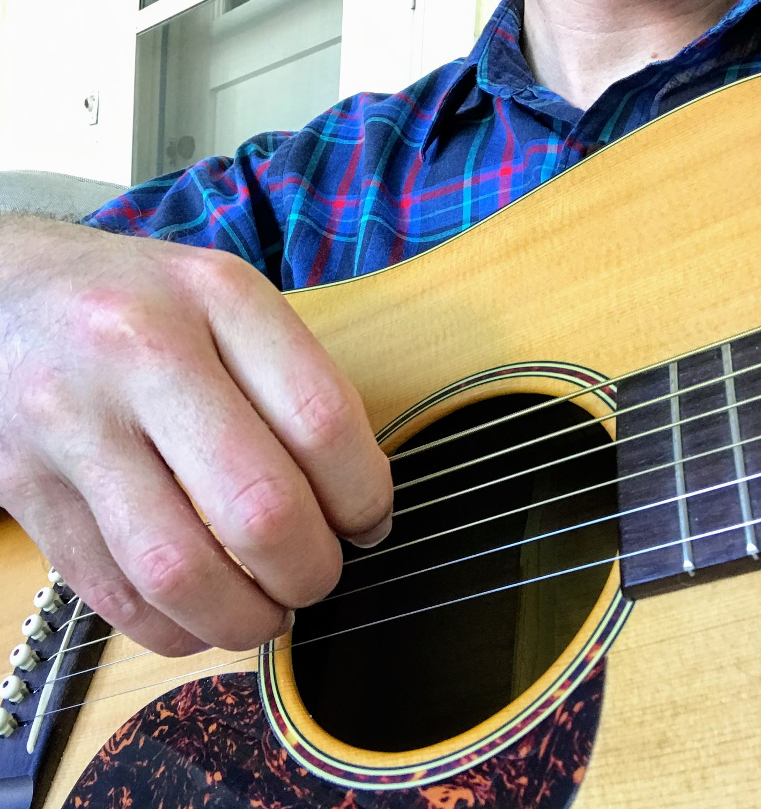

I love music!
Here are some of my favorite musicians/artists:
- Bob Dylan
- Pete Seeger
- Woody Guthrie
- Cocteau Twins
- Paul Robeson
- Moondog
These are my favorite instruments:
- Guitar
- Guzheng
- Harpsicord
- Lute
- Harmonium
- Bagpipe

Adam fingerpicking on guitar
Photo: Adam Blackbourn